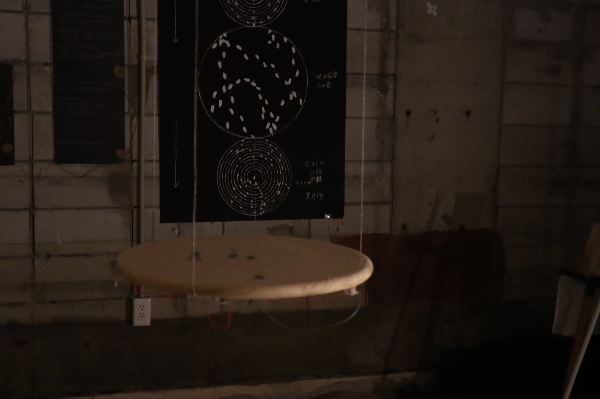

Projects / Engineering
The Music of the Sphere
System engineering for a five-day sound installation in Yushima, Tokyo

A solo sound installation shown for five days in Yushima, Tokyo. Kosuke Shimizu built and ran the exhibition system as system engineer: multichannel audio control, image recognition, sensor and software integration, setup checks, and on-site troubleshooting.